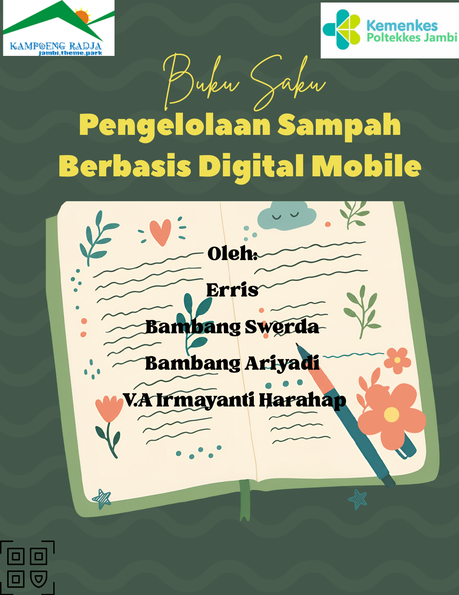
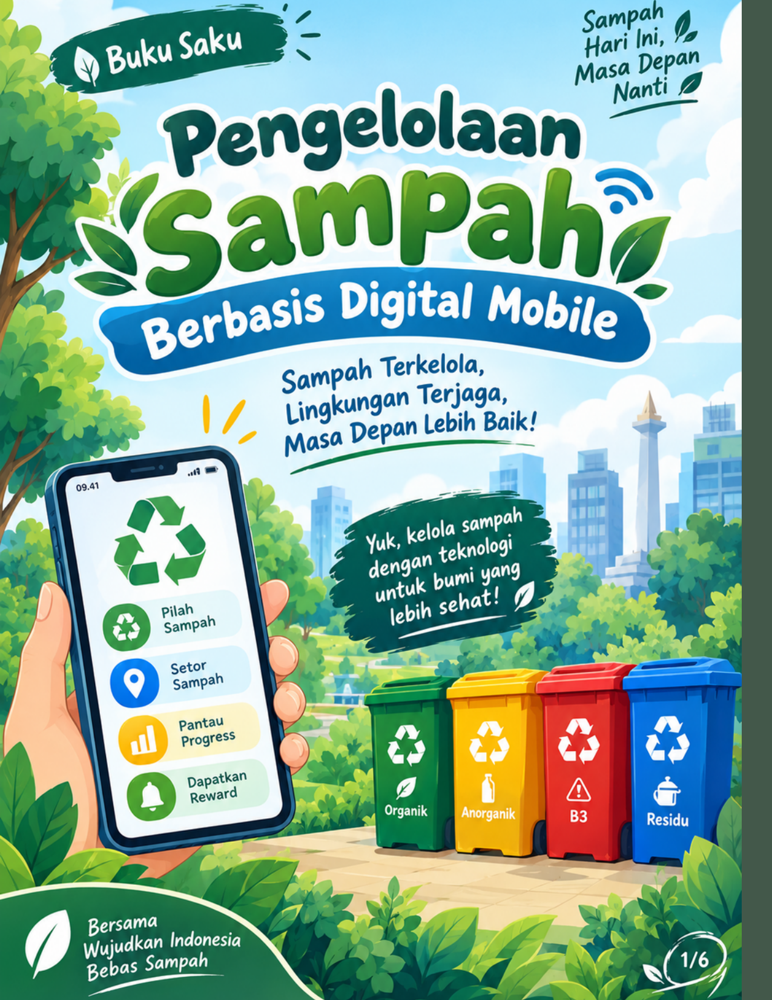
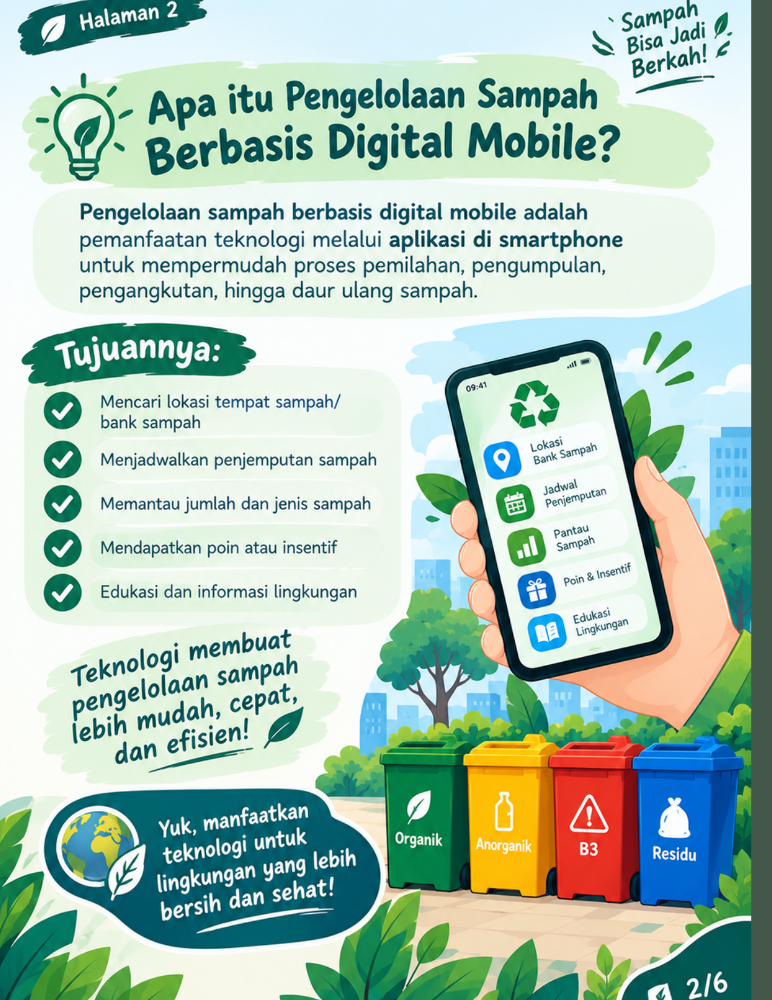
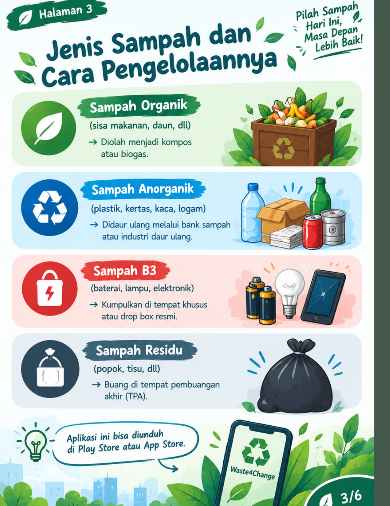
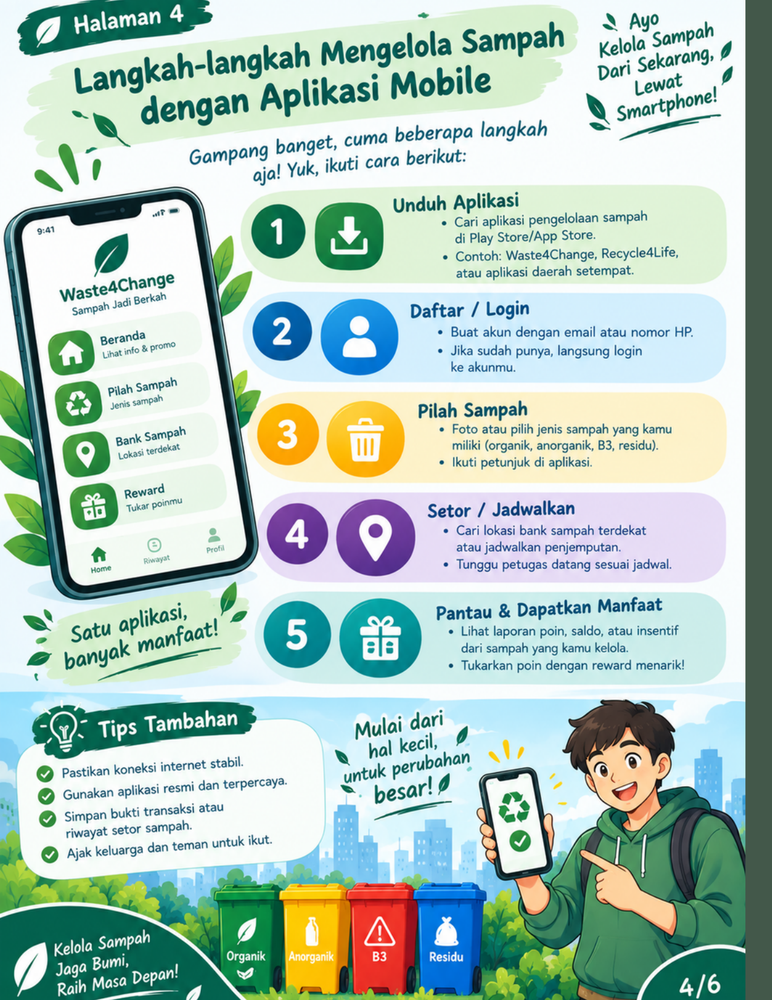
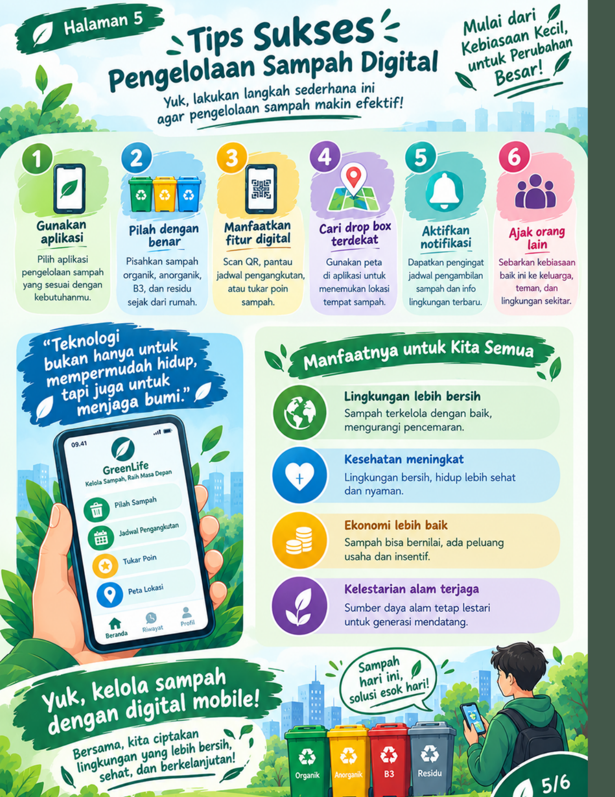
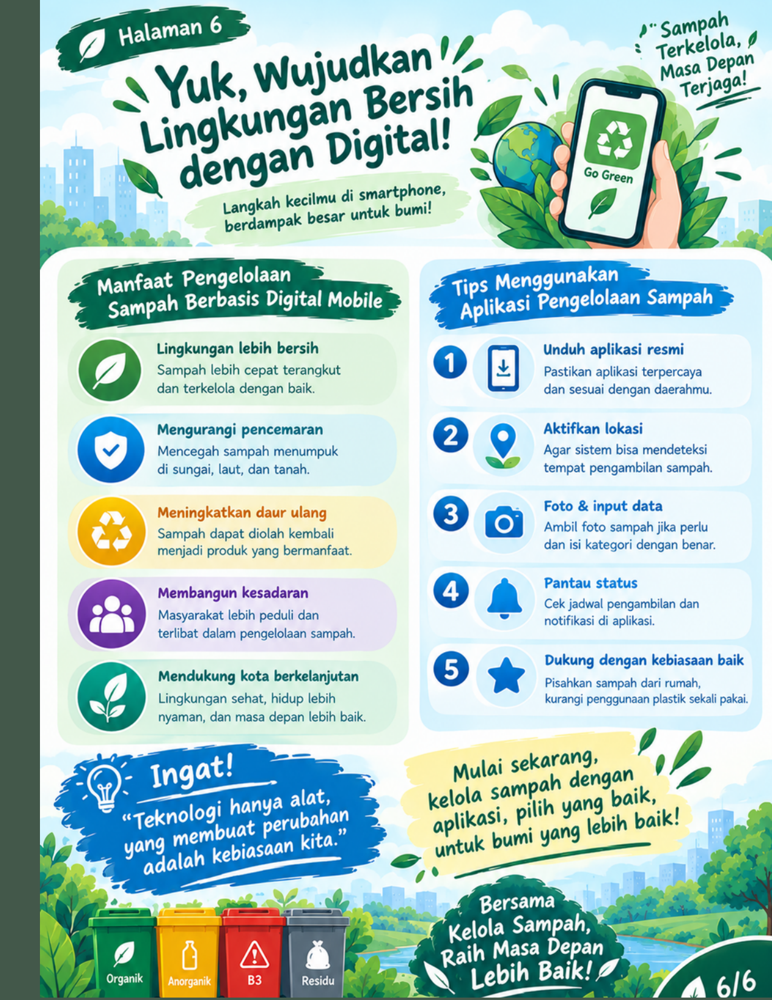
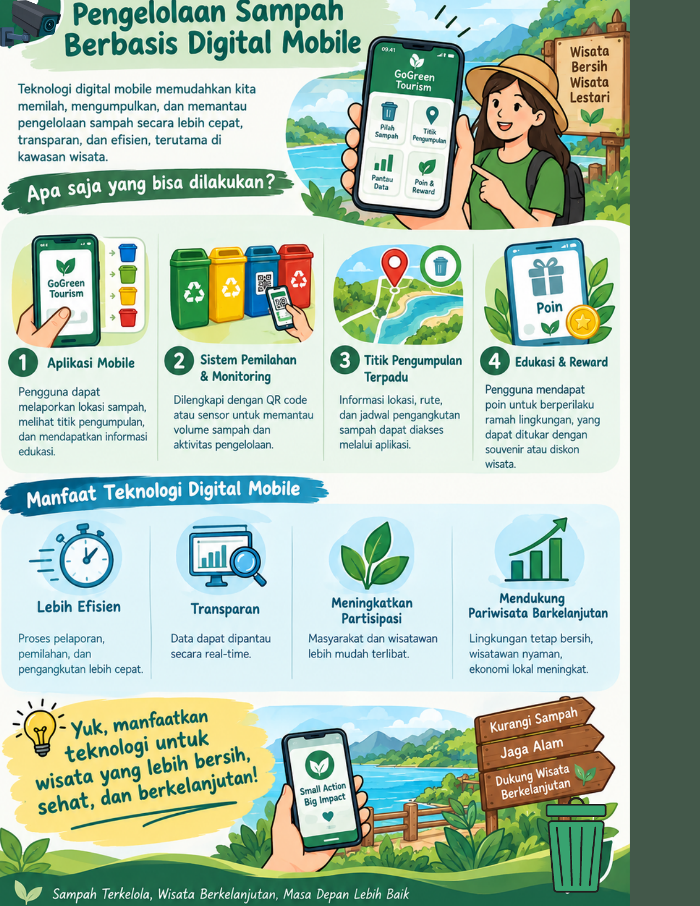

Wujudkan Destinasi Hijau dengan Pengelolaan Sampah Modern
Panduan interaktif dan terpadu berbasis digital mobile untuk pengunjung wisata, komunitas, dan pengelola. Mulai langkah nyata kurangi timbunan sampah dari diri sendiri, keluarga, hingga tempat rekreasi.

Buku Saku Digital Mobile
Oleh Erris, Bambang Swerda, Bambang Ariyadi, V.A Irmayanti Harahap
Video Edukasi Pengelolaan Sampah
Saksikan tayangan panduan pengelolaan dan pemilahan sampah praktis yang dapat langsung diterapkan saat berwisata di Kampoeng Radja Jambi maupun di rumah.
Poin Utama Video Pembelajaran
Materi dalam video ini dirancang ringkas, mudah dipahami generasi muda, dan fokus pada aksi konkret di lapangan:
Dampak penumpukan sampah bagi ekosistem dan keindahan lingkungan wisata.
Membedakan jenis sampah organik, anorganik, dan sampah beracun (B3).
Reduce, Reuse, Recycle saat menikmati wahana di Kampoeng Radja Jambi.
Komitmen bersama pengelola dan pengunjung demi lingkungan bebas polusi.
Ingin mempelajari materi lebih komprehensif dalam bentuk lembar kerja bacaan?
Buka Buku Saku DigitalBuku Saku Digital Mobile
Telusuri 8 halaman buku panduan "Pengelolaan Sampah Berbasis Digital Mobile" langsung di layar Anda atau unduh dokumen lengkapnya.

Hal 2
Hal 3
Hal 4
Hal 5
Hal 6
Hal 7
Hal 8Panduan Pemilahan Sampah Terpadu
Pilah sampah sesuai wadah dan kategorinya saat berkunjung ke Kampoeng Radja Jambi guna memudahkan proses daur ulang dan komposting.
Sampah Organik
Sampah alami yang mudah membusuk dan terurai secara hayati oleh mikroorganisme tanah.
- Sisa makanan, kulit buah, & sayuran
- Daun gugur dan ranting tanaman taman
- Ampas kopi, teh, dan cangkang telur
Sampah Anorganik
Sampah sintetis non-hayati yang tidak mudah membusuk namun memiliki nilai daur ulang tinggi.
- Botol plastik PET, gelas mineral, sedotan
- Kaleng minuman & wadah aluminium
- Kardus, kertas bersih, dan karton kemasan
Limbah B3 (Berbahaya)
Bahan Berbahaya dan Beracun yang dapat membahayakan kesehatan serta mencemari tanah/air.
- Baterai bekas, aki, dan kabel rusak
- Kemasan pestisida, racun serangga, obat
- Pecahan lampu neon & elektronik rusak
Sampah Residu
Sampah yang sulit didaur ulang secara ekonomis maupun teknis saat ini dan harus berakhir di TPA.
- Tisu kotor, masker medis sekali pakai
- Pembalut, popok bekas, kapas kosmetik
- Styrofoam kotor berminyak & plastik sobek kecil
Kalkulator Pencegahan Sampah Anda
Pilih kebiasaan ramah lingkungan yang Anda lakukan setiap minggu untuk melihat kontribusi nyata bagi kebersihan lingkungan:
Estimasi Dampak 1 Tahun
*Kalkulasi estimasi berdasarkan rata-rata volume reduksi limbah rumah tangga & pengunjung wisata nasional.
Kampoeng Radja Jambi
Kampoeng Radja merupakan salah satu ikon destinasi wisata keluarga, rekreasi, dan edukasi terkemuka di Kota Jambi. Berkomitmen menghadirkan kawasan yang asri, bersih, dan ramah lingkungan bagi seluruh pengunjung.
Melalui program kolaborasi ini, Kampoeng Radja mengedukasi wisatawan mengenai pentingnya menjaga kebersihan wahana, pemilahan sampah organik dan anorganik di titik-titik rekreasi, serta membangun kebiasaan peduli lingkungan berkelanjutan.